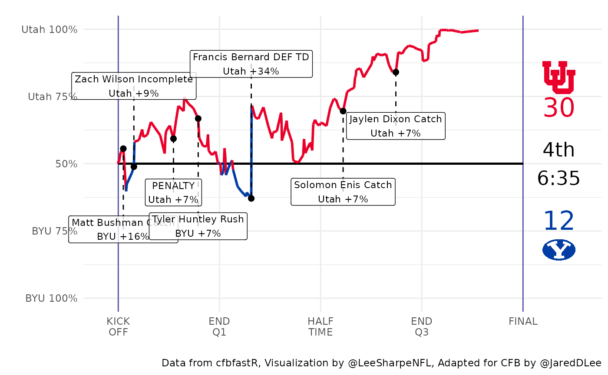

Making Animated Win Probability Charts with cfbfastR
Jared Lee


animated-wp-plotting.RmdHave you ever wanted to make an animated win probability chart for college football like Lee Sharpe makes for the NFL? This document will walk you step-by-step through the process of adapting Sharpe’s code to college football using data from CollegeFootballData.com collected using the cfbfastR package for R.
Load and Install Packages
We’re going to need several packages to generate the winning percentage plot: tidyverse for easy data wrangling, string manipulation, and plotting, glue to easily make the labels, ggimage to put the logos on the plot, and animation to actually build the GIF.
if (!requireNamespace('pacman', quietly = TRUE)){
install.packages('pacman')
}
pacman::p_load(tidyverse, animation, glue, zoo, ggimage)
pacman::p_load_current_gh("saiemgilani/cfbfastR")##
## * checking for file ‘/private/var/folders/24/8k48jl6d249_n_qfxwsl6xvm0000gn/T/Rtmp5JWmyM/remotes16e163f859c9/saiemgilani-cfbfastR-23fed65/DESCRIPTION’ ... OK
## * preparing ‘cfbfastR’:
## * checking DESCRIPTION meta-information ... OK
## * checking for LF line-endings in source and make files and shell scripts
## * checking for empty or unneeded directories
## * building ‘cfbfastR_1.3.3.tar.gz’cfbfastR
We’ll start by picking a team, a week, and a year and using cfbfastR’s functions to pull the play-by-play and the game info. cfbd_pbp_data() will grab the play-by-play info and make sure that epa_wpa is TRUE to get the win probabilities for the plot. cfbd_game_info() will pull the game info such as the home and away team and the result.
team <- "Utah"
week <- 1
year <- 2019
interp_TimeSecsRem <- function(pbp) {
temp <- pbp %>%
mutate(TimeSecsRem = ifelse(TimeSecsRem == lag(TimeSecsRem), NA, TimeSecsRem)) %>%
select(TimeSecsRem)
ind <- which(temp$TimeSecsRem == 1800)
temp$TimeSecsRem[1] <- 1800
temp$TimeSecsRem[nrow(temp)] <- 0
temp$TimeSecsRem[ind-1] <- 0
pbp<- pbp %>%
mutate(TimeSecsRem = round(zoo::na.approx(temp$TimeSecsRem))) %>%
mutate(clock.minutes = floor(TimeSecsRem/60),clock.seconds = TimeSecsRem %% 60)
return(pbp)
}
game_pbp <- cfbfastR::cfbd_pbp_data(year, team = team, week = week, epa_wpa = TRUE) %>%
filter(down > 0) %>%
interp_TimeSecsRem()
game <- cfbfastR::cfbd_game_info(year, team = team, week = week)We’ll also use the cfbd_team_info() function to pull the color and logo information and add it to the game info. We’ll also add in a result column that is the score difference between the home and the away teams that we’ll use later.
team_info <- cfbfastR::cfbd_team_info()
team_logos <- team_info %>%
select(school, color, alt_color, logos, alt_name2) %>%
mutate(logo = map(logos, magrittr::extract2, 1),
logo = as.character(logo)) %>% select(-logos)
game <- game %>%
inner_join(team_logos, by = c("away_team" = "school")) %>%
rename(away_logo = logo, away_color = color, away_alt_color = alt_color, away_abr = alt_name2) %>%
inner_join(team_logos, by = c("home_team" = "school")) %>%
rename(home_logo = logo, home_color = color, home_alt_color = alt_color, home_abr = alt_name2) %>%
mutate(result = home_points - away_points) %>%
rename(home_score = home_points, away_score = away_points)To build the labels, we’re going to use a custom function to pull the player names out of the play text. Saiem Gilani wrote the bulk of the regular expressions here to get the names. EDIT: The improved version of this is now included in the cfbd_pbp_data() function by default.
Now we are ready to transform our play-by-play data frame to match what we need to work with Lee Sharpe’s animation code. First, we will rename several columns that are similar between cfbfastR and nflfastR to match nflfastR’s column names. Then we need to create a few new columns that cfbfastR doesn’t have. game_seconds_remaining is really just renaming TimeSecsRem but correcting for the half. result grabs from the game information and is the difference in the home and away score. We create the time column to use as the clock on the right side of the animation.
game_pbp <- game_pbp %>%
rename(qtr = period, wp = wp_before, posteam = pos_team, defteam = def_pos_team,
away_team = away, home_team = home, play_id = game_play_number,
posteam_score = pos_team_score, defteam_score = def_pos_team_score) %>%
mutate(game_seconds_remaining = ifelse(half == 1, TimeSecsRem + 1800, TimeSecsRem),
result = game$result,
minlabel = ifelse(clock.minutes >= 15,
ifelse(clock.minutes == 15 & clock.seconds == 0, 15, clock.minutes - 15),
clock.minutes),
minlabel = ifelse(minlabel < 10, paste0("0", minlabel), minlabel),
seclabel = ifelse(clock.seconds < 10, paste0("0", clock.seconds), clock.seconds),
time = paste0(minlabel, ":", seclabel)) Now that our data matches nflfastR, we can start to copy Lee Sharpe’s code and the bulk of the remaining code is his with a few minor adjustments to the plot, the overtime logic, and the labels. First we filter out plays that don’t have a win percentage and fix the win probability so that it is always the probability of the away team winning.
base_wp_data <- game_pbp %>%
filter(!is.na(wp)) %>%
mutate(s = game_seconds_remaining,
wp = ifelse(posteam == away_team, wp, 1 - wp))Then we fix the plays without a wpa.
# fix if play other than last is NA
for (r in (nrow(base_wp_data)-1):1) {
if (!is.na(base_wp_data$wp[r]) && is.na(base_wp_data$wpa[r]))
{
target_wp <- base_wp_data$wp[r+1]
base_wp_data$wpa[r] <- target_wp - base_wp_data$wp[r]
}
}
# fix if last play is NA
if (is.na(base_wp_data$wpa[nrow(base_wp_data)])) {
r <- nrow(base_wp_data)
move_to <- ifelse(game$result < 0, 1, ifelse(game$result > 0, 0, 0.5))
delta <- move_to - base_wp_data$wp[r]
base_wp_data$wpa[r] <- ifelse(base_wp_data$posteam[r] == game$away_team, delta, -delta)
}Now we create the labels. This generates labels for any play that had a change in the winning percentage of more than 10 percentage points. We’ll also simplify our data frame by only selecting the relevant columns for our plots.
abs_wpa <- 0.07
wp_data <- base_wp_data %>%
mutate(
helped=ifelse(wpa > 0, posteam, defteam),
text =
case_when(
abs(wpa) > abs_wpa & play_type == "Kickoff" &
!is.na(kickoff_returner_player_name) ~ glue("{kickoff_returner_player_name} KR"),
abs(wpa) > abs_wpa & play_type == "Rush" ~ glue("{rusher_player_name} Rush"),
abs(wpa) > abs_wpa & play_type == "Pass Reception" ~ glue("{receiver_player_name} Catch"),
abs(wpa) > abs_wpa & play_type == "Sack" ~ glue("{sack_player_name} SACK"),
abs(wpa) > abs_wpa & play_type == "Punt" ~ "",#glue("{punt_returner_player_name} PR"),
abs(wpa) > abs_wpa & play_type == "Pass Incompletion" ~ glue("{passer_player_name} Incomplete"),
abs(wpa) > abs_wpa & play_type == "Fumble Recovery (Opponent)" ~ glue("{posteam} FUMBLE"),
abs(wpa) > abs_wpa & play_type == "Penalty" ~ glue("PENALTY"),
abs(wpa) > abs_wpa & play_type == "Field Goal Missed" ~ glue("{posteam} FG MISS"),
abs(wpa) > abs_wpa & play_type == "Passing Touchdown" ~ glue("{receiver_player_name} TD"),
abs(wpa) > abs_wpa & play_type == "Rushing Touchdown" ~ glue("{rusher_player_name} TD"),
abs(wpa) > abs_wpa & play_type == "Field Goal Good" &
!is.na(fg_kicker_player_name) ~ glue("{fg_kicker_player_name} FG GOOD"),
abs(wpa) > abs_wpa & play_type == "Field Goal Good" &
is.na(fg_kicker_player_name) ~ glue("{posteam} FG GOOD"),
abs(wpa) > abs_wpa & play_type == "Timeout" ~ "",
abs(wpa) > abs_wpa & play_type == "Interception Return" ~ glue("{interception_player_name} INT"),
abs(wpa) > abs_wpa & play_type == "Fumble Recovery (Own)" ~ glue("{rusher_player_name} Rush"),
abs(wpa) > abs_wpa & play_type == "Blocked Field Goal" ~ glue("{posteam} FG BLK"),
abs(wpa) > abs_wpa & play_type == "Kickoff Return (Offense)" ~ glue("{kickoff_returner_player_name} KR"),
abs(wpa) > abs_wpa & play_type == "Blocked Punt" ~ glue("{defteam} PUNT BLK"),
abs(wpa) > abs_wpa & play_type == "Interception Return Touchdown" ~ glue("{interception_player_name} DEF TD"),
abs(wpa) > abs_wpa & play_type == "Kickoff Return Touchdown" &
!is.na(kickoff_returner_player_name) ~ glue("{kickoff_returner_player_name} KR TD"),
abs(wpa) > abs_wpa & play_type == "Punt Touchdown" ~ glue("{punt_returner_player_name} PR TD"),
abs(wpa) > abs_wpa & play_type == "Fumble Recovery (Opponent) Touchdown" ~ glue("{defteam} FUMBLE TD"),
abs(wpa) > abs_wpa & play_type == "Fumble Return Touchdown" ~ glue("{defteam} FUMBLE TD"),
abs(wpa) > abs_wpa & play_type == "Safety" ~ glue("SAFETY"),
abs(wpa) > abs_wpa & play_type == "Punt Touchdown" ~ glue("{posteam} PR FUMBLE TD"),
abs(wpa) > abs_wpa & play_type == "Kickoff Touchdown" ~ glue("{posteam} KR FUMBLE TD"),
abs(wpa) > abs_wpa & play_type == "Punt Return Touchdown" ~ glue("{punt_returner_player_name} PR TD"),
abs(wpa) > abs_wpa & play_type == "Uncategorized" ~ "",
abs(wpa) > abs_wpa & play_type == "Blocked Punt Touchdown" ~ glue("{defteam} PUNT BLK TD"),
abs(wpa) > abs_wpa & play_type == "placeholder" ~ "",
abs(wpa) > abs_wpa & play_type == "Missed Field Goal Return" ~ glue("{posteam} FG MISS"),
abs(wpa) > abs_wpa & play_type == "Missed Field Goal Return Touchdown" ~ glue("{defteam} FGR TD"),
abs(wpa) > abs_wpa & play_type == "Defensive 2pt Conversion" ~ glue("{defteam} DEF 2PT"),
TRUE ~ ""),
text = ifelse(text == "","", glue("{text}\n{helped} +{abs(round(100*wpa))}%")),
away_score = ifelse(posteam == away_team, posteam_score, defteam_score),
home_score = ifelse(posteam == away_team, defteam_score, posteam_score)) %>%
select(play_id, qtr, time, s, wp, wpa, posteam, away_score, home_score, text)This is where the real magic happens. Sharpe’s code will iterate over the labels and try to determine valid locations for each one.
# points for plotting
x_max <- 0
x_lab_min <- 3600 - 250
x_lab_max <- x_max + 250
x_score <- 320 - x_max
# determine the location of the label
wp_data$x_text <- NA
wp_data$y_text <- NA
wp_data <- wp_data %>% arrange(desc(abs(wpa)))
seq_fix <- function(start, end, move)
{
if (move < 0 && start < end) return(end)
if (move > 0 && start > end) return(end)
return(seq(start, end, move))
}
for (r in which(wp_data$text != ""))
{
# ordered list of spots this label could go
y_side <- wp_data$wp[r] >= 0.5
if (y_side)
{
y_spots <- c(seq_fix(wp_data$wp[r] - 0.1, 0.05, -0.1), seq_fix(wp_data$wp[r] + 0.1, 0.95, 0.1))
} else {
y_spots <- c(seq_fix(wp_data$wp[r] + 0.1, 0.95, 0.1), seq_fix(wp_data$wp[r] - 0.1, 0.05, -0.1))
}
# iterate, see if this spot is valid
for (i in 1:length(y_spots))
{
valid <- TRUE
if (nrow(wp_data %>%
filter(y_spots[i] - 0.1 < wp & wp < y_spots[i] + 0.1 &
wp_data$s[r] - 300 < s & s < wp_data$s[r] + 300)) > 0)
{
# too close to the WP line
valid <- FALSE
}
if (nrow(wp_data %>%
filter(y_spots[i] - 0.1 < y_text & y_text < y_spots[i] + 0.1 &
wp_data$s[r] - 600 < x_text & x_text < wp_data$s[r] + 600)) > 0)
{
# too close to another label
valid <- FALSE
}
if (valid)
{
# we found a spot for it, store and break loop
wp_data$x_text[r] <- wp_data$s[r]
wp_data$y_text[r] <- y_spots[i]
break
}
}
# try x_spots?
if (!valid)
{
x_side <- wp_data$s[r] >= 1800
if (x_side)
{
x_spots <- c(seq_fix(wp_data$s[r] - 400, x_lab_max, -200),
seq_fix(wp_data$s[r] + 400, x_lab_min, 200))
} else {
x_spots <- c(seq_fix(wp_data$s[r] + 400, x_lab_min, 200),
seq_fix(wp_data$s[r] - 400, x_lab_max, -200))
}
for (i in 1:length(x_spots))
{
valid <- TRUE
if (nrow(wp_data %>%
filter(wp_data$wp[r] - 0.1 < wp & wp < wp_data$wp[r] + 0.1 &
x_spots[i] - 300 < s & s < x_spots[i] + 300)) > 0)
{
# too close to the WP line
valid <- FALSE
}
if (nrow(wp_data %>%
filter(wp_data$wp[r] - 0.1 < y_text & y_text < wp_data$wp[r] + 0.1 &
x_spots[i] - 600 < x_text & x_text < x_spots[i] + 600)) > 0)
{
# too close to another label
valid <- FALSE
}
if (valid)
{
# we found a spot for it, stop loop
wp_data$x_text[r] <- x_spots[i]
wp_data$y_text[r] <- wp_data$wp[r]
break
}
}
}
# warn about the labels not placed
if (!valid)
{
warning(glue(paste("No room for ({wp_data$s[r]},{round(wp_data$wp[r], 3)}):",
"{gsub('\n',' ',wp_data$text[r])}")))
}
}Finally, we create two new rows to our data frame for the start and end of the game, filter out any other weirdness, and arrange our data frame by the order of the plays.
# add on WP boundaries
first_row <- data.frame(play_id = 0, qtr = 1, time = "15:00", s = 3600,
wp = 0.5, wpa = NA, text = as.character(""),
x_text = 3600, y_text = 0.5, away_score = 0, home_score = 0,
stringsAsFactors = FALSE)
last_row <- data.frame(play_id = 999999, qtr = max(wp_data$qtr), s = x_max - 1,
time = ifelse(max(wp_data$qtr) >= 5, "FINAL\nOT", "FINAL"),
wp = ifelse(game$result < 0, 1, ifelse(game$result > 0, 0, 0.5)),
wpa = NA, text = as.character(""), x_text = x_max, y_text = 0.5,
away_score = game$away_score, home_score = game$home_score,
stringsAsFactors = FALSE)
wp_data <- wp_data %>%
filter(posteam != "",
wpa != 0) %>%
bind_rows(first_row) %>%
bind_rows(last_row) %>%
arrange(play_id)Plotting
Now we’re ready for plotting. The draw_frame() function will draw our win probability plot for any given number of seconds remaining in the game. This is where you can make any changes to the plot that you would like.
draw_frame <- function(n_sec)
{
# frame data
frm_data <- wp_data %>%
filter(s >= n_sec)
# output quarter changes
if (nrow(frm_data %>% filter(qtr == max(qtr))) == 1)
{
print(glue("Plotting pbp in quarter {max(frm_data$qtr)}"))
}
# plot
frm_plot <- frm_data %>%
ggplot(aes(x = s, y = wp)) +
theme_minimal() +
geom_vline(xintercept = c(3600, x_max), color = "#5555AA") +
geom_segment(x = -3600, xend = -x_max, y = 0.5, yend = 0.5, size = 0.75) +
geom_image(x = x_score, y = 0.82, image = game$away_logo, size = 0.08, asp = 1.5) +
geom_image(x = x_score, y = 0.18, image = game$home_logo, size = 0.08, asp = 1.5) +
geom_line(aes(color = ..y.. < .5), size = 1) +
scale_color_manual(values = c(game$away_color, game$home_color)) +
scale_x_continuous(trans = "reverse",
minor_breaks = NULL,
labels = c("KICK\nOFF", "END\nQ1", "HALF\nTIME", "END\nQ3", "FINAL"),
breaks = seq(3600, 0, -900),
limits = c(3700, x_max - 490)) +
scale_y_continuous(labels = c(glue("{game$home_abr} 100%"),
glue("{game$home_abr} 75%"),
"50%",
glue("{game$away_abr} 75%"),
glue("{game$away_abr} 100%")),
breaks = c(0, 0.25, 0.5, 0.75, 1),
limits = c(0, 1)) +
coord_cartesian(clip = "off") +
xlab("") +
ylab("") +
labs(title = glue("Win Probability Chart: {game$season} Week {game$wk} {game$away_team} @ {game$home_team}"),
caption = "Data from cfbfastR, Visualization by @LeeSharpeNFL, Adapted for CFB by @JaredDLee") +
theme(legend.position = "none")
# score display
away_score <- max(frm_data$away_score)
home_score <- max(frm_data$home_score)
# clock display
qtr <- case_when(
max(frm_data$qtr) == 1 ~ "1st",
max(frm_data$qtr) == 2 ~ "2nd",
max(frm_data$qtr) == 3 ~ "3rd",
max(frm_data$qtr) == 4 ~ "4th",
max(frm_data$qtr) == 5 ~ "OT",
TRUE ~ as.character(max(frm_data$qtr))
)
clock <- tail(frm_data$time, 1)
clock <- ifelse(substr(clock, 1, 1) == "0", substr(clock, 2, 100), clock)
clock <- paste0(qtr, "\n", clock)
clock <- ifelse(grepl("FINAL", tail(frm_data$time, 1)), tail(frm_data$time, 1), clock)
# add score and clock to plot
frm_plot <- frm_plot +
annotate("text", x = -1*x_score, y = 0.71, label = away_score, color = game$away_color, size = 8) +
annotate("text", x = -1*x_score, y = 0.29, label = home_score, color = game$home_color, size = 8) +
annotate("text", x = -1*x_score, y = 0.50, label = clock, color = "#000000", size = 6)
# label key moments
frm_labels <- frm_data %>%
filter(text != "")
frm_plot <- frm_plot +
geom_point(frm_labels, mapping = aes(x = s, y = wp),
color = "#000000", size = 2, show.legend = FALSE) +
geom_segment(frm_labels, mapping = aes(x = x_text, xend = s, y = y_text, yend = wp),
linetype = "dashed", color = "#000000", na.rm=TRUE) +
geom_label(frm_labels, mapping = aes(x = x_text, y = y_text, label = text),
size = 3, color = "#000000", na.rm = TRUE, alpha = 0.8)
# plot the frame
plot(frm_plot, width = 12.5, height = 6.47, dpi = 500)
}Let’s test our function to make sure the plot looks like how we want it by running our function with 6 minutes left in the game.
draw_frame(360)
Looks great, so next we create the draw_game() function which will draw every frame for our GIF.
Animating
Finally, we run our draw_game() function inside of saveGIF().
# saveGIF(draw_game(), interval = 0.1, movie.name = "animated_wp.gif")
Result
This process takes awhile, about 3 minutes on my computer. We can also re-size our GIF using the ani.width, ani.height and ani.res parameters. I like to make my plots wider and at higher resolution, but be careful, this will drastically increase the rendering time and the file size.
# saveGIF(draw_game(), interval = 0.1, movie.name = 'animated_wp_wide.gif',
# ani.width = 800, ani.height = 500, ani.res = 110)
Result